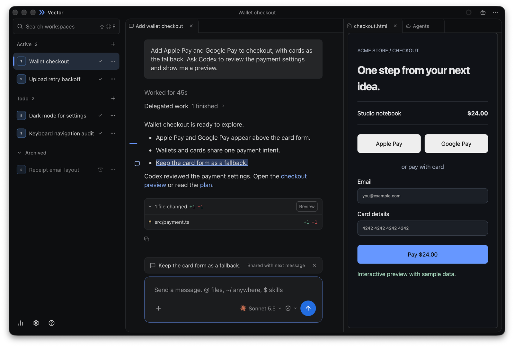

Changed files
See exactly what each agent changed.
Open file diffs right in the transcript, scoped to an agent’s run. See what changed during that run, even when the working tree already had edits.
Give your agents more ways to work. And yourself the tools to understand, shape, and build on what they do.

Work with one agent or many. Explore approaches, share context, and build your way. Vector gives you and your agents the capabilities to make it happen.
Open file diffs right in the transcript, scoped to an agent’s run. See what changed during that run, even when the working tree already had edits.
Claude, Codex, and Cursor agents can delegate to each other when useful. Follow delegated work, open an agent’s conversation, or view a subagent’s activity and guide it through its parent.
Select a passage and add a comment to explore it in a side conversation. Share the thread with the main agent in your next message, or leave it out.
Chats, the Agents view, and previews are tabs. Keep them together or create another group and move tabs between them. Read Markdown, explore HTML, and inspect images wherever they fit.
Copy a reference to any workspace, agent, or message and paste it into another conversation. Give the agent the context to pick up where the work left off.
Control what agents can access and how they execute. Follow progress, respond when they need you, and step in when the direction changes.
Bring your provider CLIs. Vector works with the Claude, Codex, and Cursor CLIs you already have installed, using your accounts, configuration, skills, and MCP servers.